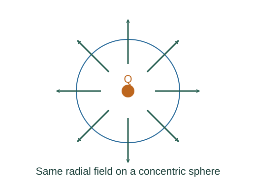

Use Gauss’s law to derive a spherical electric field
Gauss’s law is a general field law. Spherical symmetry is the additional ingredient that lets us extract a local electric field from the total flux.
What the symbols mean
Qenc: enclosed charge; d𝐀: outward-oriented surface-area element; r: Gaussian-sphere radius; ε₀: vacuum permittivity.
When this applies
Electrostatics in vacuum. The simple field evaluation requires a spherically symmetric charge distribution centred on the Gaussian sphere.
Developing the argument

Distinguish flux from field
Flux adds the normal component of electric field over a closed surface. Gauss’s law fixes that total using enclosed charge; it does not imply that field is constant on an arbitrary surface.
Choose a sphere matching the symmetry
Spherical symmetry requires a radial field with the same signed radial component everywhere on a concentric sphere. It can therefore be taken out of the surface integral.
Evaluate the exterior field
Outside the entire distribution, the enclosed charge is Q. Divide the flux relation by the sphere area.
A closer lookHow does this match Coulomb’s law? ↗Coulomb’s law and superpositionEvaluate the interior of a uniform solid sphere
For sphere radius R, the enclosed fraction of charge is r³/R³. Substitution gives a field proportional to r inside.
A worked example
At r = 0 the uniform solid sphere has zero field. At r = R the interior and exterior formulas agree.
Derivation behind this calculation ↗A point to keep straight
Zero enclosed charge implies zero net flux, not necessarily zero field. External charges can produce nonzero fields whose inward and outward fluxes cancel.
Check the assumptions and derivation ↗